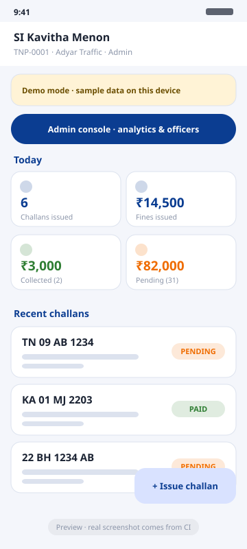
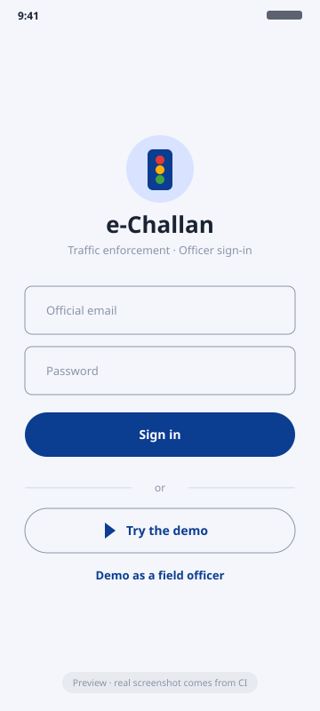

Plate validation
Indian state series (including Delhi-style DL 3C AF 0001) and Bharat series 22 BH 1234 AB, normalised as you type.
AndroidKotlin · Firebase · 2023
A native app for traffic police officers: validate the plate, pick the offences, attach GPS and photo evidence, and hand over a QR-coded PDF challan. Repeat offenders are priced automatically, and every record syncs to Firebase when the network returns.
Latest build from main · Android 7.0+ · debug-signed, for evaluation only.
No account needed: tap Try the demo on the login screen.
All releases

01Features
Built for patchy networks, busy junctions and auditors who want every rupee accounted for.
Indian state series (including Delhi-style DL 3C AF 0001) and Bharat series 22 BH 1234 AB, normalised as you type.
Integer-rupee calculator escalates ×1.0 → ×1.5 → ×2.0 for prior offences in 365 days, with a per-line cap and a live preview.
Fused location with reverse geocoding and a camera capture via the Activity Result API, down-sampled before upload.
A4 challan and receipt rendered with PdfDocument, a ZXing QR that carries no personal data, shared through FileProvider.
Room is the source of truth. Writes are queued and pushed by a Hilt WorkManager worker with backoff and optimistic concurrency.
Officer and admin roles are Firebase custom claims set only with the Admin SDK. The rules validate every field and enforce create-only records.
7, 30 and 90-day analytics drawn on a Compose Canvas, plus an officer directory with activation controls and challan cancellation.
Search by plate or challan number, filter by status and date range, and keep an append-only officer activity log.
02Demo mode
The APK works out of the box. Try the demo signs you in locally as a station admin (or as a field officer) and seeds a month of realistic challans into Room: repeat offenders, paid, pending and cancelled records, and a full activity log. Demo data never leaves the device and is deleted when you sign out.
03Screens
Previews are shown until the next CI run publishes real screenshots.

Firebase email sign-in gated by the officer/admin role claim. Builds without a Firebase project offer a one-tap demo that seeds sample data locally.
04Architecture
The domain is pure Kotlin with no Android dependency, so the business rules run as fast JVM tests.
:data provides the interfaces that :domain declares.pendingOp = CREATE and log the action./violations/{id} and marks the row synced.05Data & security
Default-deny rules, roles from custom claims, and field-level validation on every write.
firebase/sample-data.json"officers": {
"<uid>": { name, email, role, badgeNumber, station, active }
},
"violations": {
"<id>": {
challanNumber: "EC-TN-20230915-4821-K7Q2XM",
vehicleNumber: "TN09AB1234",
offenderName, offenderPhone,
fine: { total: 6500, lines: {
NO_HELMET: { section: "194D", baseAmount: 1000,
priorOffences: 1, multiplierPercent: 150,
amount: 1500 } } },
location: { lat, lng, accuracy, address },
evidencePhotoUrl, notes,
officerId, officerName, officerBadge, issuedAt,
status: "PENDING | PAID | CANCELLED",
payment: { mode, reference, paidAt, collectedBy },
cancelReason, updatedAt
}
},
"officerLogs": {
"<uid>": { "<logId>": { action, details, referenceId, timestamp } }
}Evidence lives in Cloud Storage at evidence/{violationId}/{file}.jpg. Room mirrors violations and officer_logs locally with a pending-operation marker.
firebase/database.rules.json| Path | Read | Write |
|---|---|---|
/ | denied | denied (default deny) |
/officers/{uid} | self or admin | admins only |
/violations | officers & admins (indexed) | n/a |
/violations/{id} | n/a | create-only by an active officer for themself; admins may edit or cancel |
…/status | n/a | PENDING → PAID only |
…/payment | n/a | once, while pending, collectedBy = caller |
/officerLogs/{uid}/{id} | owner or admin | owner, append-only |
auth.token.role, set with the Admin SDK only.challanNumber, officerId and issuedAt are immutable.$other: false.06Tech stack
07Get started
Every push to main builds, lints and tests the app, publishes the APK to the rolling
latest release
and refreshes the screenshots on this page.
# clone and run the JVM tests (no Android SDK needed)
git clone https://github.com/srini2k03/traffic-violation-fine-manager
cd traffic-violation-fine-manager
./gradlew :domain:test
# build and install the debug app (demo mode works without Firebase)
./gradlew installDebug
# optional: real backend
cp ~/Downloads/google-services.json app/
firebase deploy --only database,storage